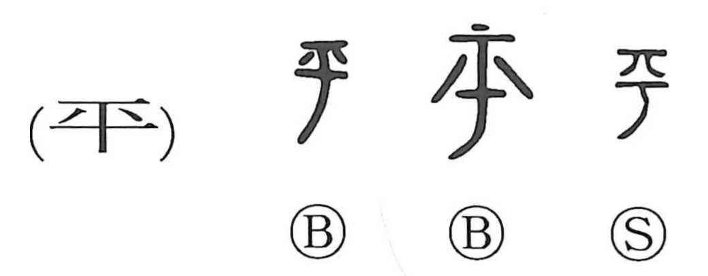

平

Kun: taira, hira, tairageru, tairaka | On: hei, byou, ben
flat ・ level ・ calm ・ peace ・ equal ・ to subdue
Explanation
Shirakawa explains 平 as a compound graph built from 于, the form of a hand axe, and 八, the form of split pieces of wood. The ancient figure shows wood flying off to left and right under the axe, capturing the act of cutting something down flat and even. From this physical image came the senses “to make level” and, metaphorically, “to pacify,” and hence ideas of calm, peace, and fairness—seen in words like 平定 (subjugation), 平安 (peace and security), 平和/和平 (peace), 公平 (impartiality), and 平等 (equality). He also notes an old On reading close to 便 (biàn), as when the Shujing’s 平章 appears as 便章 in the Shiji; the ben reading likely echoes the percussive sound of striking with an axe.